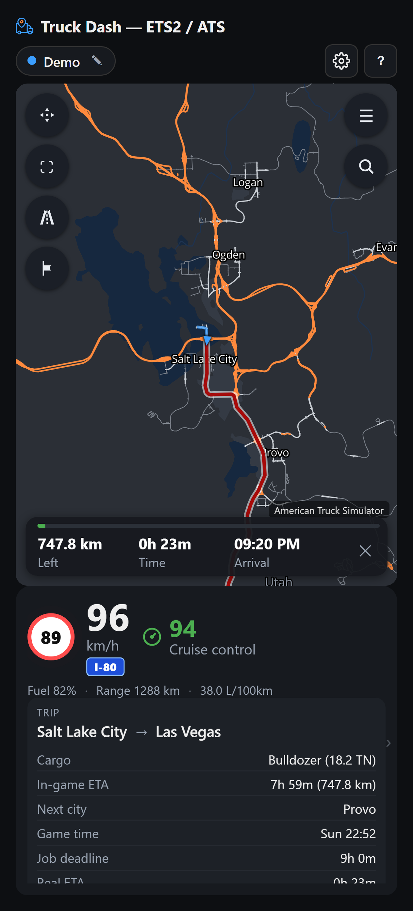
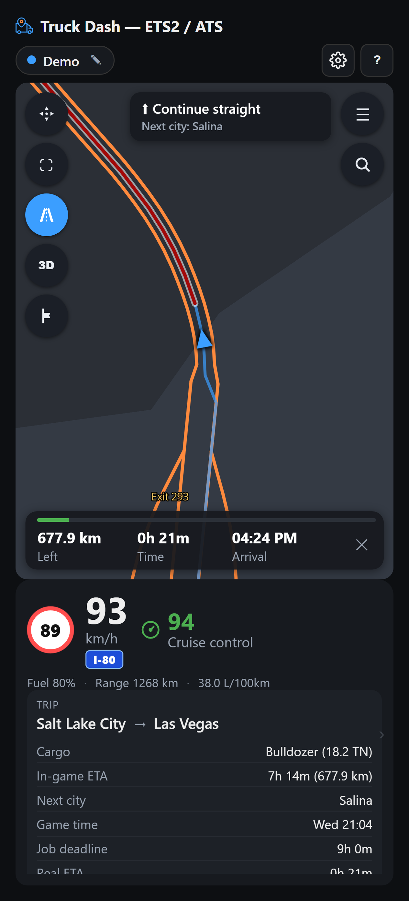

Truck Dash
A free, real-time companion dashboard for Euro Truck Simulator 2 and American Truck Simulator.
Get Started — it's free Join our DiscordLatest jobs completed
| Route | Truck | Cargo | Pay | Distance | Game |
|---|
About Truck Dash
Truck Dash is a browser dashboard that runs alongside Euro Truck Simulator 2 or American Truck Simulator, showing your live position on a real map, a real route to your destination, speed and speed limit, cargo, fuel, wear, and more — all in real time, for free, with no account needed.
This is the dashboard itself — you'll need the local client running (see Get Started below) for it to show your own live data: Open the dashboard →
Real map & routes
Actual road network for both games, with a live route calculated to your destination — not a straight line.
Speed & limits
Google Maps-style speed limit sign, cruise control readout, and alerts when you're over the limit.
Truck vitals
Fuel, range, consumption, and wear per part, with warnings before something breaks down.
Any device
Works on desktop and mobile, in portrait or landscape, with a fullscreen mode for a clean view.
GPS navigation mode
Optional heading-up view that rotates and zooms dynamically as you drive, with turn-by-turn style directions and smoothed route curves — like a real GPS.
Map mod support
Coast to Coast and ProMods Canada for ATS, and ProMods (Europe + all addons) for ETS2 — enable them with one toggle in Mods, no extra setup.
This is what it looks like while driving:

GPS navigation mode in action:


Get Started (free)
Three one-time steps and you're set. No installer, no account, no admin rights needed.
Install the SCS telemetry plugin
Truck Dash reads data through the game's official telemetry SDK. Download the plugin and copy only the .dll file (not the whole downloaded folder) into your game's install folder, inside bin\win_x64\plugins\ — create that plugins folder if it doesn't exist yet. Once per game.
Download the Truck Dash client
A small, portable program that reads the game's telemetry and opens your browser, already connected. No install, no Python needed.
Run it and start driving
Open the game, run the client, and your browser opens automatically — already paired and live.
Map mod support
If you use one of these map mods, turn it on with a single checkbox in the app's Mods panel — no extra setup, no separate download.
Coast to Coast (ATS)
Extends the American Truck Simulator map with new roads and cities.
ProMods Canada (ATS)
Adds British Columbia to the American Truck Simulator map.
ProMods (ETS2)
Europe plus all its addons (Middle East, The Great Steppe, Maghreb) for Euro Truck Simulator 2, all in one toggle.
These mods still need to be installed in your game as usual — Truck Dash just knows how to draw the extra roads once you tell it which one you're using.
Contact
Questions, bugs, or ideas? Reach out directly: